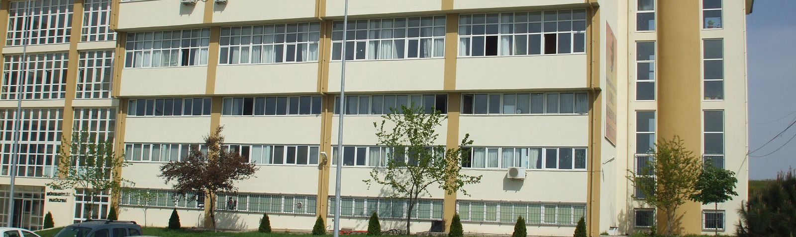
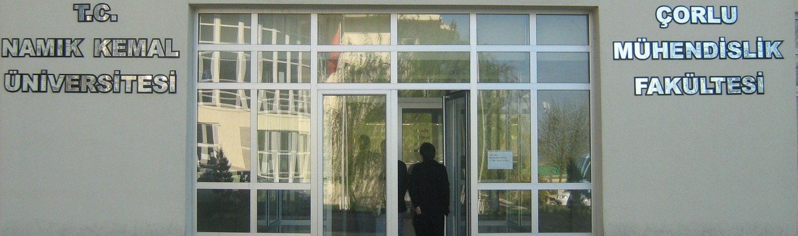
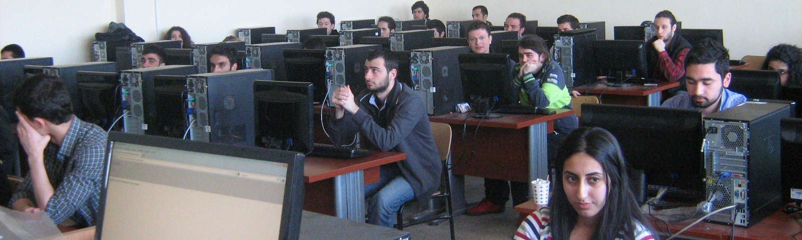

BİRİNCİ BÖLÜM
Amaç, Kapsam, Dayanak ve Tanımlar
Amaç ve kapsam
MADDE 1 – (1) Bu Yönetmeliğin amacı; Namık Kemal Üniversitesine bağlı enstitülerde yürütülen lisansüstü eğitim-öğretim ve sınavlarla ilgili usul ve esasları düzenlemektir.
(2) Bu Yönetmelik; Namık Kemal Üniversitesinde yürütülen yüksek lisans, doktora ve sanatta yeterlik programlarından oluşan lisansüstü eğitim ve öğretime ilişkin hükümleri kapsar.
Dayanak
MADDE 2 – (1) Bu Yönetmelik, 2547 sayılı Yükseköğretim Kanununun 14 üncü maddesine dayanılarak hazırlanmıştır.
Tanımlar
MADDE 3 – (1) Bu Yönetmelikte geçen;
a) AKTS: Avrupa Kredi Transfer Sistemini,
b) ALES: Akademik Personel ve Lisansüstü Eğitimi Giriş Sınavını,
c) Anabilim/anasanat dalı: 3/3/1983 tarihli ve 17976 sayılı Resmî Gazete’de yayımlanan Lisansüstü Eğitim-Öğretim Enstitülerinin Teşkilat ve İşleyiş Yönetmeliğinin 5 inci maddesinde enstitü için tanımlanan ve enstitüde eğitim programı bulunan anabilim/anasanatdalını,
ç) Anabilim/anasanat dalı başkanı: Lisansüstü düzeydeki eğitimin yürütülmesinden enstitüye karşı sorumlu olan, açılacak programları, program değişikliklerini, öğrenci kontenjanlarını, bir yarıyılda açılacak dersleri ve bu derslerin hangi öğretim elemanlarınca verileceğini, jüriler ve danışmanlarla ilgili olarak anabilim/anasanat dalı akademik kurulunda belirlenen öneriler ile komite ve jüri karar ve raporlarını enstitüye bildiren ve Lisansüstü Eğitim-Öğretim Enstitülerinin Teşkilat ve İşleyiş Yönetmeliğinin 5 inci maddesinde tanımlanan anabilim/anasanat dalı başkanını,
d) Anabilim/anasanat dalı akademik kurulu: Üniversitedeki öğretim üyeleri ve görevlilerinden oluşan, lisansüstü düzeyde ders veren veya tez/sanat eseri/sanatta yeterlik çalışması yöneten, ilgili anabilim veya anasanat dalı programlarının planlanmasında ve uygulanmasında anabilim/anasanat dalı başkanına görüş bildiren kurulu,
e) Danışman: Enstitüde kayıtlı öğrenciye ders ve tez/sanat eseri/sanatta yeterlik eseri çalışması dönemlerinde rehberlik etmek üzere enstitü yönetim kurulu tarafından atanan öğretim üyesini,
f) Enstitü: Namık Kemal Üniversitesine bağlı olan lisansüstü eğitim-öğretim yapan enstitüleri,
g) Enstitü kurulu: Enstitü müdürünün başkanlığında, enstitü müdür yardımcıları ve enstitüde öğretim programları bulunan ve/veya ortak öğretim programı yürüten anabilim/anasanat dalı başkanlarından oluşan kurulu,
ğ) Enstitü yönetim kurulu: Enstitü müdürünün başkanlığında, enstitü müdür yardımcıları ve müdürün göstereceği altı aday arasından enstitü kurulunca seçilecek üç öğretim üyesinden oluşan kurulu,
h) Kredi: Bir lisansüstü dersin yarıyıl kredi değeri olup; bir yarıyıl devam eden bir dersin haftalık teorik ders saatinin tamamı ile haftalık iki-altı saatlik uygulama, alan ya da atölye çalışması ya da laboratuvar/klinik çalışması karşılığının yarısının toplamının en fazla dört olan toplam sayısal ağırlık birimini,
ı) Rektörlük: Namık Kemal Üniversitesi Rektörlüğünü,
i) Sanatta yeterlik eseri çalışması: Sanatta yeterlik programları öğrencilerinin, sanatta yeterlik tezi yerine hazırlayabilecekleri ya da yapabilecekleri sanatsal çalışmayı,
j) Sanat eseri raporu: Sanatta yüksek lisans programları öğrencilerinin, yüksek lisans tezi yerine hazırlayabilecekleri yazılı raporu,
k) Sanatta yeterlik eseri çalışması raporu: Sanatta yeterlik programları öğrencilerinin, sanatta yeterlik tezi yerine sanatta yeterlik eseri çalışmasıyla ilgili olarak hazırlayabilecekleri yazılı raporu,
l) Senato: Namık Kemal Üniversitesi Senatosunu,
m) Tez: Yüksek lisans tezi, doktora tezi/sanatta yeterlik tezini,
n) TUS: Tıpta Uzmanlık Sınavını,
o) ÜDS: Üniversitelerarası Kurul Yabancı Dil Sınavını
ö) Üniversite: Namık Kemal Üniversitesini,
p) YDS: Yabancı Dil Bilgisi Seviye Tespit Sınavını,
ifade eder.
İKİNCİ BÖLÜM
Öğrenci Kabulü ve Kayıt, Dersler, Sınavlar ve Değerlendirme
Öğrenci kabulü
MADDE 4 – (1) Yüksek lisans programına başvurabilmek için adayların; bir lisans diplomasına sahip olmaları, ÖSYM tarafından merkezi olarak yapılan ALES’ten başvurduğu programın puan türünde en az 55 standart puan almış olmaları veya ALES sonucu yerine Senato tarafından eşdeğerliği kabul edilerek başarı taban puanları belirlenen ve uluslararası düzeyde kabul gören sınavlarda başarılı olmaları gerekir. Güzelsanatlar ve Konservatuvar anabilim/anasanat dalları yüksek lisans ve tezsiz yüksek lisans programlarına başvuracak adaylardan ALES puanı aranmaz.
(2) Yüksek lisans programlarına öğrenci kabulünde başarı notu; lisans mezuniyet ağırlıklı not ortalamasının %10’u, ALES’tenalınan standart puanın %50’si ve her bir anabilim dalı için enstitü yönetim kurulunca kurulan jüri tarafından yapılan mülakat sonucu alınan puanın %40’ı toplanarak bulunur. Ancak, Güzelsanatlar ve Konservatuvar anabilim/anasanat dalları ve tezsiz yüksek lisans programlarının değerlendirmesi; mülakat puanının %70’i ve lisans mezuniyet ağırlıklı not ortalamasının %30’u dikkate alınarak yapılır. Bir adayın başarılı sayılabilmesi için başarı notunun en az 65 olması gerekir. En yüksek puandan en küçüğe doğru sıralama yapılarak ilan edilen kontenjan kadar öğrenci alınır.
(3) Doktora programına başvurabilmek için adayların;
a) (Değişik:RG-2/8/2013-28726) Bir lisans veya tezli yüksek lisans diplomasına; hazırlık sınıfları hariç en az on yarıyıl süreli tıp, diş hekimliği ve veteriner fakültesi diplomasına, eczacılık ile fen fakülteleri lisans veya yüksek lisans derecesine veya Sağlık Bakanlığınca düzenlenen esaslara göre bir laboratuvar dalında kazanılan uzmanlık yetkisine sahip olmaları ve ALES’ten başvurduğu programın puan türünde en az 55 standart puana sahip olmaları veya ALES sonucu yerine Senato tarafından eşdeğerliği kabul edilerek başarı taban puanları belirlenen ve uluslararası düzeyde kabul gören sınavlarda başarılı olmaları, tezsiz yüksek lisans veya lisans diploması ile başvuranların ALES’ten başvurduğu programın puan türünde en az 80 standart puan almaları gerekir. Lisans derecesiyle doktora programına başvuranların lisans mezuniyet not ortalaması olarak 4 üzerinden en az 3 veya muadili bir puana sahip olmaları gerekir.
b) Doktora programına başvurabilmek için ÜDS’den en az 55 puan veya Üniversitelerarası Kurulca kabul edilen bir sınavdan bu puan muadili bir puan, yabancı uyruklu öğrenciler için ana dilleri dışında İngilizce, Fransızca ve Almanca dillerinden birinden ÜDS’den en az 55 puan veya Üniversitelerarası Kurulca kabul edilen bir sınavdan söz konusu puan muadili bir puan alınması zorunlu olup, söz konusu asgari puanların girilecek programların özelliklerine göre yükseltilmesi konusunda Senato yetkilidir. Bir yabancı dil alanından lisans diplomasına sahip olanlar, alan dilleri dışında bir başka dilden istenilen puanı almak zorundadır.
(4) Doktora programlarına öğrenci kabulünde başarı notu; lisans derecesi ile başvuranların lisans, yüksek lisans derecesi ile başvuranların yüksek lisans mezuniyet ağırlıklı not ortalamasının %10’u, ALES’ten alınan standart puanın %50’si ve her bir anabilim dalı için enstitü yönetim kurulunca kurulan jüri tarafından yapılan mülakat sonucu alınan puanın %40’ı toplanarak bulunur. Bir adayın başarılı sayılabilmesi için başarı notunun en az 70 olması gerekir. En yüksek puandan en küçüğe doğru sıralama yapılarak ilan edilen kontenjan kadar öğrenci alınır.
(5) Yüksek lisans ve lisans mezuniyet ağırlıklı not ortalaması; tıp, diş hekimliği ve veteriner fakültesi mezunları için, anılan fakültelerden mezun olunan ağırlıklı not ortalamasını ifade eder ve hem lisans hem yüksek lisans mezuniyet notu yerine kullanılır.
(6) (Değişik:RG-2/8/2013-28726) Sanatta yeterlik çalışmasına başvurabilmek için adayların; bir lisans veya yüksek lisans diplomasına sahip olmaları, yüksek lisans diploması ile başvuranların ALES’ten başvurduğu programın puan türünde en az 55, lisans diploması ile başvuranların ise en az 80 standart puana sahip olmaları veya ALES sonucu yerine Senato tarafından eşdeğerliği kabul edilerek başarı taban puanları belirlenen ve uluslararası düzeyde kabul gören sınavlarda başarılı olmaları gerekir. Lisans derecesiyle sanatta yeterlik programına başvuranların lisans mezuniyet not ortalaması olarak 4 üzerinden en az 3 veya muadili bir puana sahip olmaları gerekir. Ancak sanatta yeterlik programına öğrenci kabulünde; ÜDS’den en az 55 puan veya Üniversitelerarası Kurulca kabul edilen bir sınavdan bu puan muadili bir puan, yabancı uyruklu öğrenciler için ana dilleri dışında İngilizce, Fransızca ve Almanca dillerinden birinden ÜDS’den en az 55 puan veya Üniversitelerarası Kurulca kabul edilen bir sınavdan bu puan muadili bir puan alınması zorunlu olup, bu asgari puanların girilecek programların özelliklerine göre yükseltilmesi konusunda Senato yetkilidir.
(7) Sanatta yeterlik programlarına öğrenci kabulünde ALES puanı ile birlikte lisans ve/veya yüksek lisans not ortalaması, mülakat/yetenek sınavı portfolyö (sanatsal birikim belgeler dosyası) incelemesi sonucu değerlendirilir. Başarı puanı; ALES puanının %40’ı, mülakat/yetenek/portfolyö incelemesinin %50’si, yüksek lisans/lisans mezuniyet ağırlıklı not ortalamasının %10’u alınarak hesaplanır. Adayın başarılı sayılabilmesi için yukarıda belirtilen puanların toplamının 100 üzerinden en az 70 olması gerekir. En yüksek puandan en küçüğe doğru sıralama yapılarak ilan edilen kontenjan kadar öğrenci alınır.
(8) Temel tıp bilimlerinde doktora programına başvurabilmek için; tıp fakültesi mezunlarının lisans diplomasına ve en az 50 temel tıp puanına veya ALES’ten sayısal puan türünde en az 55 standart puana sahip olmaları veya ALES sonucu yerine Senato tarafından eşdeğerliği kabul edilerek başarı taban puanları belirlenen ve uluslararası düzeyde kabul gören sınavlarda başarılı olmaları gerekir. Temel Tıp puanı; (TUS) Temel Tıp Bilimleri Testi I. Bölümünden elde edilen standart puanın 0.7, Klinik Tıp Bilimleri Testinden elde edilen standart puanın 0.3 ile çarpılarak toplanması ile elde edilir.
(9) Tıp Fakültesi mezunu olmayanların Yüksek Lisans diplomasına, diş hekimliği ve veteriner fakülteleri mezunlarının lisans derecesine sahip olmaları ve ALES’ten sayısal puan türünde en az 55 standart puana sahip olmaları veya ALES sonucu yerine Senato tarafından eşdeğerliği kabul edilerek başarı taban puanları belirlenen ve uluslararası düzeyde kabul gören sınavlarda başarılı olmaları gerekir.
(10) Doktora programlarına öğrenci kabulünde, temel tıp puanı veya ALES puanı ile birlikte, lisans ve/veya yüksek lisans not ortalaması ve enstitü yönetim kurulunca kurulan jüri tarafından yapılan mülakat değerlendirilir. Başarı puanı; ALES puanı veya temel tıp puanının %50’si, mülakat puanının %40’ı, yüksek lisans/lisans mezuniyet ağırlıklı not ortalamasının %10’u toplanarak belirlenir. Adayın başarılı sayılabilmesi için bu puanların toplamının 100 üzerinden en az 70 olması gerekir. En yüksek puandan en küçüğe doğru sıralama yapılarak ilan edilen kontenjan kadar öğrenci alınır. Ancak, temel tıp bilimlerinde doktora programına öğrenci kabulünde ÜDS’den en az 55 puan veya Üniversitelerarası Kurulca kabul edilen bir sınavdan bu puan muadili bir puan zorunlu olup, bu asgari puanların girilecek programların özelliklerine göre yükseltilmesi konusunda Senato yetkilidir.
(11) Yüksek lisans ve doktora programları ile sanatta yeterlik çalışması için yapılan mülakat sınavına girmeyen adaylar başarısız sayılır.
(12) Yüksek lisans ve doktora programları ile sanatta yeterlik çalışmasına; Üniversitelerarası Kurul kararı ile belirlenen lisans ve yüksek lisans programlarından mezun olanlar başvurabilir. Ancak, Senato belirlenen programlar dışında öğrenci kabulüne karar verebilir.
(13) Yurt dışında ikamet eden Türk uyruklu adaylar ile ikili anlaşmalar ve ortak programlar çerçevesinde burs alanlar veya kendi hesabına yüksek lisans ya da doktora yapmak üzere müracaat eden yabancı uyruklu adaylar, Senato tarafından belirlenen başvurduğu enstitünün başvuru şartlarını sağlamak koşuluyla lisans ve varsa lisansüstü notları değerlendirilerek ilgili enstitü yönetim kurulu kararı ile öğrenci olarak kabul edilebilirler. Doktora programına başvuracak yabancı uyruklu adaylar için ana dilleri dışında İngilizce, Fransızca ve Almanca dillerinden birinden ÜDS’den en az 55 puan veya Üniversitelerarası Kurulca kabul edilen bir sınavdan bu puan muadili bir puan alınması zorunludur. Belge ve bilgilerinde eksiklikleri tespit edilenlere bu eksiklikleri tamamlattırılır.
(14) İlgili enstitüler; öğrenci kabul edecekleri lisansüstü programların adlarını, başvuru koşullarını, son başvuru tarihini, istenen belgeleri ve diğer hususları ilan vererek duyurur. Söz konusu ilan her yarıyıl başında yenilenebilir.
(15) Öğretmen yetiştirme alanlarındaki lisansüstü programlara kabul, değerlendirme ve diplomaların verilmesi ile bu programların asgari müşterek dersler ve uygulamaları Yükseköğretim Kurulunca belirlenen esaslara göre yürütülür.
(16) Yeni kurulan ve gelişmekte olan üniversiteler veya yüksek teknoloji enstitüleri adına başka üniversitelerde yüksek lisans ve doktora yapan araştırma görevlilerinin tez projeleri ilgili mevzuat hükümlerine göre yürütülür ve desteklenir.
Bilimsel hazırlık programına öğrenci kabulü
MADDE 5 – (1) Yüksek lisans ve doktora programlarında, nitelikleri aşağıda belirtilen adayların eksikliklerini gidermek amacıyla bilimsel hazırlık programı uygulanabilir:
a) Lisans derecesini başvurdukları yüksek lisans veya doktora programından farklı alanlarda almış olan adaylar.
b) Lisans derecesini başvurdukları yükseköğretim kurumu dışındaki yükseköğretim kurumlarından almış olan yüksek lisans programı adayları.
c) Lisans veya yüksek lisans derecelerini başvurdukları yükseköğretim kurumu dışındaki yükseköğretim kurumlarından almış olan doktora adayları.
ç) Lisans veya yüksek lisans derecesini başvurdukları doktora programından farklı alanda almış olan adaylar.
(2) Bilimsel hazırlık programına bu Yönetmeliğin 4 üncü maddesinin birinci, ikinci, üçüncü, dördüncü ve beşinci fıkralarında belirtilen esaslara göre öğrenci kabul edilir.
(3) Bilimsel hazırlık programında alınması zorunlu dersler, ilgili lisansüstü programını tamamlamak için gerekli görülen derslerin yerine geçemez. Ancak bilimsel hazırlık programındaki bir öğrenci, bilimsel hazırlık derslerinin yanı sıra, ilgili enstitü anabilim dalı başkanlığının önerisi ve enstitü yönetim kurulu onayı ile programa yönelik dersler de alabilir. Ancak, programa yönelik olarak bir yarıyılda en fazla üç lisansüstü ders alınabilir. Bilimsel hazırlık programına tabi öğrenciler seminer ve tez çalışma planını bu süre içerisinde sunamaz.
(4) Bilimsel hazırlık programı ile ilgili devam, ders sınavları, ders notları, derslerden başarılı sayılma koşulları, ders tekrarı, kayıt silme ve diğer konularda, ilgili lisans ve yüksek lisans programlarındaki esaslar uygulanır.
(5) Bilimsel hazırlık programında geçirilecek süre en fazla iki yarıyıldır ve öğrencinin kayıt yaptırdığı tarihten itibaren başlar. Bu programda geçirilen süre, bu Yönetmelikte belirtilen yüksek lisans veya doktora programı sürelerine dahil edilmez. Ancak bilimsel hazırlık programında aldığı dersleri başarıyla tamamlayamayanlar, bir sonraki dönemde ilgili lisansüstü programa başlamış olduğu kabul edilerek, öncelikle başarısız oldukları dersleri tekrar alırlar ve bu süre lisansüstü süreye dahil edilir.
(6) Bilimsel hazırlık programındaki iki yarıyılda alınan dersler, yirmi dört krediden fazla olmaz.
Özel öğrenci kabulü
MADDE 6 – (1) Bir yükseköğretim kurumu mezunu veya öğrencisi olup, belirli bir konuda bilgisini artırmak isteyenler, ilgili enstitü anabilim dalı başkanlığının onayı ile ilgili enstitüden en az bir öğrencinin kayıtlı olduğu lisansüstü derslere özel öğrenci olarak kabul edilebilir. Özel öğrenci statüsünde ders alanlar öğrencilik haklarından yararlanamaz, ancak Üniversite Yönetim Kurulunca her ders için belirlenen ücreti öderler. Öğrenci isterse girdiği ve başarılı olduğu dersler için kendisine başarı durumunu gösteren bir belge verilir.
(2) Özel öğrencilerin enstitüye kabulü, anabilim dalı başkanlığının teklifi ve enstitü yönetim kurulunun kararı ile olur. Özel öğrenciler, lisansüstü programlara kayıt yaptırmaları halinde, özel öğrencilik statüsünde aldıkları ve başarılı oldukları en fazla dört dersten, anabilim dalı akademik kurulunun teklifi ve enstitü yönetim kurulunun kararı ile muaf tutulabilirler.
Yatay geçiş yoluyla öğrenci kabulü
MADDE 7 – (1) İlgili üniversite veya yüksek teknoloji enstitü içindeki başka bir anabilim dalında veya başka bir yükseköğretim kurumunun lisansüstü programında en az bir yarıyılı tamamlamış ve en fazla yüksek lisans için dört yarıyılını, doktora için sekiz yarıyılını tamamlamamış olan başarılı öğrenci, lisansüstü programlara yatay geçiş yoluyla kabul edilebilir. Lisansüstü programların yatay geçiş kontenjanları ve başvuru tarihleri her yarıyıl ilan edilir. Yatay geçiş yoluyla öğrenci kabulü ilgili anabilim dalı başkanlığının uygun görüşü ve enstitü yönetim kurulu kararı ile olur.
Lisansüstü programlara kayıt
MADDE 8 – (1) Lisansüstü giriş sınavlarını kazanan adayların listesi, enstitü yönetim kurulu kararıyla kesinleşir ve enstitü müdürlüğü tarafından ilan edilir. İlan edilen süre içinde ilgili enstitüye kesin kaydını yaptırmayan adaylar kayıt hakkını kaybederler.
Dersler, sınavlar ve değerlendirme
MADDE 9 – (1) Bir lisansüstü dersin yarıyıl kredi değeri, bir yarıyıl devam eden bir dersin haftalık teorik ders saatinin tamamı ile haftalık uygulama ve laboratuvar saatinin yarısının toplamıdır.
(2) Açılacak lisansüstü dersler ile bu derslerden hangilerinin zorunlu, hangilerinin seçmeli olduğu, anabilim dalı akademik kurulunca tespit edilir ve her yarıyıl başında enstitü kurulunca belirlenir.
(3) Lisansüstü programlarda derslere devam zorunludur. Teorik ve uygulamalı derslerin %30’undan fazlasına devam etmeyen öğrenciler devamsız sayılır. Bir yarıyılda okutulan bir derse ait ödev ve/veya uygulamaların ortalamaları ile ara sınav notlarının başarı notuna etki oranları, yarıyıl başında ilgili anabilim dalı akademik kurulunda belirlenir ve enstitü kurulunda onaylandıktan sonra ilan edilir.
(4) Bir yarıyılda okutulan her ders için bir yarıyıl sonu sınavı açılır. Sınavlar, Senato tarafından belirlenen akademik takvim içerisinde yapılır. Sınav programı, ilgili anabilim dalı başkanlığınca hazırlanır ve on beş gün önceden ilan edilir.
(5) Sınav sonuçları sınav tarihini izleyen bir hafta içinde öğretim üyesi tarafından öğrenci işleri otomasyonuna kaydedilir. Dersin not çizelgesi öğretim elemanınca imzalanarak anabilim dalına teslim edilir. Not çizelgesinin anabilim dalı tarafından enstitü müdürlüğüne iletilmesinin ardından notları otomasyonda ilan edilir.
(6) Tüm ödev, uygulama ve sınavlar 100 tam puan üzerinden değerlendirilir ve yarıyıl sonu sınavının başarı notuna etkisi %50’den az olamaz. Başarılı sayılmak için başarı notunun yüksek lisans programında en az 65 puan, doktora programında ise en az 75 puan olması gerekir. Lisansüstü derslerin sınav notlarının 100 tam not üzerinden belirlenmesi esas olmakla beraber istenildiğinde bir öğrencinin öğrenim durumu belgesi aşağıda belirtilen şekilde hazırlanır.
a) Sınav notlarının harfli sisteme göre eşdeğerleri aşağıdaki çizelgede belirtildiği şekildedir.
1)
|
Puan değeri |
Harfli Notu |
Katsayı |
|
90-100 |
AA |
4,00 |
|
85-89 |
BA |
3,50 |
|
80-84 |
BB |
3,00 |
|
75-79 |
CB |
2,50 |
|
65-74 |
CC |
2,00 |
|
0-64 |
FF |
0,00 |
b) Bir dersten başarılı sayılmak için başarı notunun yüksek lisans programında en az 65, doktora programında ise en az 75 puan; harfli sistemde ise yüksek lisans programında en az CC ve doktora programında ise CB harf notu olması gerekir.
c) Harfli sisteme göre belge düzenlenirken, aşağıda tanımlanan harf notları da kullanılır:
1) DZ - devamsız notu; ders kaydı yaptırılan ancak devam koşulu yerine getirilemeyen kredili dersler için verilir.
2) BL - başarılı harf notu; kredisiz ders, seminer ve tez çalışmalarını başarıyla tamamlayan öğrencilere verilir.
3) BZ - başarısız harf notu; kredisiz ders, seminer ve tez çalışmalarında başarısızlık durumunda verilir.
4) TR - transfer harf notu; diğer üniversitelerden alınan ve programa kabul edilen dersler için ve muaf tutulan dersler için verilir.
ç) Yarıyıl sınavı sonunda başarısız olunan dersler için Senato tarafından belirlenen akademik takvimde gösterilen tarihlerde bütünleme sınavı yapılır.
(7) Bir dersten başarısız olan öğrenci, danışmanının önerisi ile bu dersi tekrar alabilir veya yeni bir ders alabilir. Süresi içerisinde ders kaydını yaptıran öğrencilerden herhangi bir nedenle ders değiştirmek veya bırakmak isteyenler, devamsızlık sınırını aşmamak şartıyla, danışmanının önerisi ve anabilim dalı başkanlığının uygun görüşü ile o yarıyılda açılan başka bir derse kayıt yaptırabilir veya ders bırakabilir. Bu durum öğrencinin dosyasına işlenmek üzere ilgili anabilim dalı başkanlığı tarafından enstitüye bildirilir.
(8) Sınav sonucuna itirazlar, sınav sonucunun ilanından itibaren yedi gün içinde ilgili enstitü müdürlüğüne yapılır. Sınav evrakı, ilgili enstitü yönetim kurulunda oluşturulan ve ders sorumlusu öğretim üyesinin de yer aldığı konuyla ilgili üç kişilik bir komisyon tarafından incelenir. Komisyon değerlendirmesi ilgili enstitü yönetim kurulunda karara bağlanır.
(9) Danışman; öğrencinin kayıt yenileme formunda belirtilmesi şartıyla, lisansüstü programlarda öğrenci sayısına bakılmadan her yarıyıl, danışman olarak atandığı lisansüstü öğrencileri için, haftalık ders programında yer alan, içeriği, günü, saati ve yeri belirlenmiş, öğrenciye hitap eden ve öğretim üyesinin aktif olarak katıldığı haftada sekiz saatlik teorik bir uzmanlık alan dersi açabilir. Bu ders, bu Yönetmeliğin 11 inci maddesinin birinci fıkrası ve 20 nci maddesinin üçüncü fıkrasında belirtilen programı tamamlamak için gerekli ders sayısına ilave edilmez. Uzmanlık alan derslerinin yarıyıl sonunda yapılan sınavları başarılı veya başarısız olarak değerlendirilir. Uzmanlık alan dersleri enstitü yönetim kurulu tarafından danışmanın atandığı tarihte başlar ve enstitü yönetim kurulunun öğrencinin mezuniyetine karar verdiği tarihe kadar, ara ve yaz tatillerini de kapsayacak şekilde devam eder.
(10) Üniversitede birden fazla enstitüde danışmanlık yapan öğretim üyeleri, sadece görev yaptığı anabilim dalının bağlı olduğu enstitüde uzmanlık alan dersi açabilir.
(11) Lisansüstü programlarında ders saydırma, muaf olma ve buna bağlı olarak süre eksiltme koşulları, ilgili anabilim dalı başkanlığının önerisi ve ilgili enstitü yönetim kurulunun onayı ile belirlenir.
Yüksek lisans programı
MADDE 10 – (1) Yüksek lisans programı tezli ve tezsiz olmak üzere iki şekilde yürütülebilir. Bu programların hangi enstitü anabilim dallarında ve nasıl yürütüleceği ilgili anabilim dalı başkanlığının teklifi, enstitü kurulu kararı ve Senatonun onayı ile belirlenir.
(2) Tezli ve tezsiz yüksek lisans programları arasında yapılacak geçişler, ilgili programın koşullarını yerine getirmek şartıyla; anabilim dalı başkanlığının uygun görüşü ve enstitü yönetim kurulu kararı ile olabilir.
ÜÇÜNCÜ BÖLÜM
Tezli Yüksek Lisans Programı
Amaç ve kapsam
MADDE 11 – (1) Tezli yüksek lisans programının amacı; öğrencinin bilimsel araştırma yaparak bilgilere erişme, bilgiyi değerlendirme ve yorumlama yeteneğini kazanmasını sağlamaktır. Bu program; en az yirmi bir en fazla yirmi yedi kredi saatlik (35-45 AKTS kredisi), en az yedi en fazla on iki adet dersten, bir seminer dersi ve tez çalışmasından oluşur. Seminer dersi ve tez çalışması kredisiz olup, başarılı veya başarısız olarak değerlendirilir. Öğrenci ikinci yarıyılın sonunda veya en geç üçüncü yarıyılın başında tez çalışma planını anabilim dalı akademik kurulunda sunmak ve her yarıyıl tez çalışmasına kayıt yaptırmak zorundadır.
(2) Öğrencinin alacağı derslerin en çok iki tanesi, lisans öğrenimi sırasında alınmamış olması koşuluyla, lisans derslerinden seçilebilir. Ayrıca dersler, ilgili enstitü anabilim dalı başkanlığının önerisi ve enstitü yönetim kurulu onayı ile diğer yükseköğretim kurumlarında verilmekte olan derslerden de seçilebilir.
Süre
MADDE 12 – (1) Tezli yüksek lisans programını tamamlama süresi dört yarıyıldır.
(2) Dört yarıyıl sonunda kredili derslerini ve seminer dersini başarı ile tamamlamayan öğrenci, toplam lisansüstü ders kredisini yirmi yedi krediye (45 AKTS kredisi) tamamlamak zorundadır.
(3) Kredili derslerini ve seminer dersini başarıyla bitiren, ancak tez çalışmasını bu maddenin birinci fıkrasında belirtilen dört yarıyıl sonuna kadar tamamlayamadığı için tez sınavına giremeyen bir öğrenciye, ilgili enstitü anabilim dalı başkanlığının önerisi ve enstitü yönetim kurulu onayı ile tezini jüri önünde savunması için iki yarıyıl ek süre verilebilir.
(4) Yukarıda üçüncü fıkrada belirtilen iki yarıyıl ek süre sonunda tez savunma sınavına giremeyen veya başarısız olan öğrenciler (altıncı yarıyılını tamamlamış) 2547 sayılı Kanunun 46 ncı maddesi kapsamına alınır ve ders, tez hazırlama ve sınavlara katılma dışında diğer öğrencilik haklarından yararlanamaz.
Danışman atanması ve tez çalışması
MADDE 13 – (1) Tezli yüksek lisans programında enstitü anabilim dalı başkanlığı, anabilim dalı akademik kurul kararı ile programa kesin kayıt yaptıran her öğrenci için bir danışmanı bir hafta içerisinde enstitüye önerir. Danışman önerisi ilgili enstitü yönetim kurulu onayı ile kesinleşir.
(2) Tez çalışmasının niteliğinin birden fazla danışmanı gerektirdiği durumlarda ikinci bir danışman atanabilir.
(3) Danışman ilgili anabilim dalı öğretim üyeleri arasından seçilir.
Yüksek lisans tezinin sonuçlanması
MADDE 14 – (1) Tezli yüksek lisans programındaki bir öğrenci elde ettiği sonuçları ilgili enstitü kurulu tarafından belirlenen yazım kurallarına ve imla bakımından Türk Dil Kurumunca çıkarılan imla kılavuzuna uygun biçimde yazmak ve azami süre içerisinde tezini jüri önünde savunmak zorundadır. Tezini azami süre içerisinde (altıncı yarıyıl) jüri önünde savunmayan öğrenci, üç ay içerisinde yeni bir tez çalışma planı sunar.
(2) Yüksek lisans tez jürisi; ilgili enstitü anabilim dalı başkanlığının önerisi ve enstitü yönetim kurulunun onayı ile atanır. Jüri, biri öğrencinin tez danışmanı ve en az biri yükseköğretim kurumu içindeki başka bir anabilim dalından veya başka bir yükseköğretim kurumundan olmak üzere üç, ikinci danışmanın jüri üyesi olması durumunda ise beş öğretim üyesinden oluşur.
(3) Jüri üyeleri, söz konusu tezin kendilerine teslim edildiği tarihten itibaren en geç bir ay içinde, hazırladıkları kişisel raporlarla toplanarak, öğrenciyi tez sınavına alır. Tez sınavı, tez çalışmasının sunulması ve bunu izleyen soru-cevap bölümünden oluşur. Sınav süresi, tez savunması da dahil en az 45, en çok 90 dakikadır.
(4) Sınav günü, saati ve yeri ilgili anabilim dalı başkanlığınca yedi gün önceden ilan edilir. Tez çalışmasının sunulması ve soru-cevap bölümü dinleyicilere açık olup, öğrenciye yalnız jüri üyeleri soru sorabilir.
(5) Tez sınavının tamamlanmasından sonra jüri tez hakkında salt çoğunlukla kabul, ret veya düzeltme kararı verir. Bu karar enstitü anabilim dalı başkanlığınca, jüri üyelerinin kişisel raporları eklenerek, bir tutanakla ilgili enstitüye bildirilir.
(6) Jüri tarafından tezi reddedilen öğrenci en geç üç ay içerisinde yeni bir tez konusu ve tez çalışma planını anabilim dalı akademik kurul kararı ile enstitüye önerir.
(7) Tez savunma sınavı sonucunda tezi hakkında düzeltme kararı verilen öğrenci en geç üç ay içinde gereğini yaparak tezini aynı jüri önünde yeniden savunur. Bu savunma sonunda tezi kabul edilmeyen öğrenci en geç üç ay içerisinde yeni bir tez konusu ve tez çalışma planını anabilim dalı akademik kurul kararı ile enstitüye önerir.
Yüksek lisans diploması
MADDE 15 – (1) Tez sınavında başarılı olmak ve enstitü tarafından istenen ilgili basılı ve elektronik dokümanlarla birlikte, enstitü tez yazım kurallarına uygun olarak yazılmış tezin bir kopyasını tez sınavına giriş tarihinden itibaren bir ay içinde enstitüye teslim eden ve tezi şekil yönünden uygun bulunan yüksek lisans öğrencisine yüksek lisans diploması ile diploma eki verilir. Diplomanın aslı hazırlanıncaya kadar diploma yerine geçen çıkış belgesi verilebilir ancak diploma eki verilmez.
(2) Öğrencinin tezini ve gerekli belgelerini birinci maddede belirtilen süreden sonra teslim etmesi durumunda, enstitü yönetim kurulunca mezuniyet kararının alınabilmesi için ilgili yarıyılda kayıt yenilemiş olması zorunludur.
(3) Yüksek lisans diploması üzerinde öğrencinin izlemiş olduğu enstitü anabilim dalındaki programın onaylanmış adı bulunur.
DÖRDÜNCÜ BÖLÜM
Tezsiz Yüksek Lisans Programı
Amaç ve kapsam
MADDE 16 – (1) Tezsiz yüksek lisans programının amacı; öğrenciye mesleki konuda derin bilgi kazandırmak ve mevcut bilginin uygulamada nasıl kullanılacağını göstermektir. Tezsiz yüksek lisans programı ikinci lisansüstü öğretimde de yürütülebilir. Bu program toplam otuz krediden (50 AKTS) az olmamak koşuluyla en az on adet ders ile dönem projesi dersinden oluşur.
(2) Öğrencinin alacağı derslerin en çok üç tanesi, lisans öğrenimi sırasında alınmamış olması koşuluyla, lisans derslerinden seçilebilir.
(3) Tezsiz yüksek lisans öğrencisi başarısız olduğu bir dersin yerine, takip eden yarıyılda, kendi anabilim dalında açılan seçmeli dersler grubundan eşdeğer kredilik bir başka ders alabilir.
(4) Dönem projesi lisansüstü dersler tamamlandıktan sonra alınır. Öğrenci, dönem projesinin alındığı yarıyılda dönem projesine kayıt yaptırmak ve yarıyıl sonunda yazılı bir rapor vermek zorundadır. Dönem projesi “Başarılı” veya “Başarısız” olarak değerlendirilir. Dönem projesi anabilim dalının önerisi ve enstitü yönetim kurulu kararıyla belirlenen üç öğretim üyesinden oluşan jüri tarafından değerlendirilir. Dönem projesi tatil dönemleri içerisinde de tamamlanabilir. İlgili enstitü tarafından belirlenen esaslara bağlı olarak tezsiz yüksek lisans programının sonunda anabilim dalının önerisi ve enstitü yönetim kurulu kararıyla belirlenen üç kişilik jüri tarafından yeterlik sınavı uygulanabilir.
Danışman atanması
MADDE 17 – (1) Tezsiz yüksek lisans programında, enstitü anabilim dalı başkanlığı her öğrenci için ders seçiminde ve dönem projesinin yürütülmesinde danışmanlık yapacak bir öğretim üyesini birinci yarıyıl başında belirler.
Süre
MADDE 18 – (1) Tezsiz yüksek lisans programını tamamlama süresi en fazla altı yarıyıldır.
(2) Tezsiz yüksek lisans programını altı yarıyılda tamamlayamayan öğrenciye 2547 sayılı Kanunun 46 ncı maddesi kapsamında belirtilen koşullar uygulanır.
(3) Azami süre içerisinde derslerini tamamlayamayan öğrenci lisansüstü ders kredisini en az otuz altı krediye (60 AKTS) tamamlamak zorundadır. Azami süre içerisinde derslerini tamamlamış ancak dönem projesini tamamlayamamış veya dönem projesi başarısız bulunan öğrenci, yeni bir dönem projesi hazırlar.
Yüksek lisans diploması
MADDE 19 – (1) Kredili derslerini ve dönem projesini başarıyla tamamlayan tezsiz yüksek lisans öğrencisine, yüksek lisans diploması verilir.
(2) Yüksek lisans diploması üzerinde öğrencinin izlemiş olduğu enstitü anabilim dalındaki programın onaylanmış adı bulunur.
BEŞİNCİ BÖLÜM
Doktora Programı
Amaç ve kapsam
MADDE 20 – (1) Doktora programının amacı; öğrenciye bağımsız araştırma yapma, bilimsel olayları geniş ve derin bir bakış açısı ile irdeleyerek yorum yapma ve yeni sentezlere ulaşmak için gerekli adımları belirleme yeteneği kazandırmaktır.
(2) Doktora çalışması sonunda hazırlanacak tezin;
a) Bilime yenilik getirme,
b) Yeni bir bilimsel yöntem geliştirme,
c) Bilinen bir yöntemi yeni bir alana uygulama niteliklerinden en az birini yerine getirmesi
gerekir.
(3) Doktora programı, yüksek lisans derecesi olan öğrenciler için toplam yirmi bir krediden (35 AKTS) az olmamak koşuluyla en az yedi adet ders, bir seminer dersi, yeterlik sınavı, tez önerisi ve tez çalışmasından oluşur. Lisans derecesi ile kabul edilmiş öğrenciler için de en az kırk iki kredilik (70 AKTS kredisi) on dört adet ders, iki seminer dersi, yeterlik sınavı, tez önerisi ve tez çalışmasından oluşur.
(4) Lisansüstü dersler, ilgili enstitü anabilim dalı başkanlığının önerisi ve enstitü yönetim kurulu onayı ile diğer yükseköğretim kurumlarında verilmekte olan derslerden de seçilebilir.
(5) Lisans dersleri ders yüküne ve doktora kredisine sayılmaz.
(6) Doktora programları yurt içi ve yurt dışı bütünleşik doktora programları şeklinde düzenlenebilir. Bu programlar; ilgili üniversite veya yüksek teknoloji enstitülerinin teklifi, öğretim üyesi ve araştırıcı yetiştirme kurulunun görüşü üzerine Yükseköğretim Kurulunca belirlenen esaslara göre yürütülür.
Süre
MADDE 21 – (1) Doktora programını tamamlama süresi; yüksek lisans derecesi ile kabul edilenler için sekiz yarıyıl, lisans derecesi ile kabul edilenler için on yarıyıldır.
(2) Doktora programı için gerekli kredili dersleri ve semineri başarıyla tamamlamanın azami süresi yüksek lisans derecesi ile kabul edilenler için dört yarıyıl, lisans derecesi ile kabul edilenler için altı yarıyıldır. Dört yarıyıl sonunda (lisans derecesiyle kabul edilen öğrenciler için altı yarıyıl sonunda) kredili derslerini ve seminer dersini başarı ile tamamlamayan öğrenci, toplam lisansüstü ders kredisini en az yirmi yedi (45 AKTS kredisi) krediye tamamlamak zorundadır.
(3) Kredili derslerini başarıyla bitiren, yeterlik sınavında başarılı bulunan ve tez önerisi kabul edilen, ancak tez çalışmasını birinci fıkrada belirtilen sekiz yarıyıl, lisans derecesi ile kabul edilmiş olan öğrenci için on yarıyıl sonuna kadar tamamlayamadığı için tez savunma sınavına giremeyen bir öğrenciye, ilgili enstitü anabilim dalı başkanlığının önerisi ve enstitü yönetim kurulu onayı ile tezini jüri önünde savunması için en fazla dört yarıyıl daha ek süre verilebilir. Bu süre sonunda tez savunma sınavına giremeyen veya başarısız olan öğrencilere (on ikinci yarıyılını tamamlamış) 2547 sayılı Kanunun 46 ncı maddesi kapsamında belirtilen koşullar uygulanır.
Danışman atanması
MADDE 22 – (1) Doktora programında enstitü anabilim dalı başkanlığı, anabilim dalı akademik kurul kararı ile programa kesin kayıt yaptıran her öğrenci için bir danışmanı bir hafta içerisinde enstitüye önerir. Danışman önerisi enstitü yönetim kurulu kararıyla kesinleşir. Tez çalışmasının niteliğinin birden fazla danışmanı gerektirdiği durumlarda ikinci tez danışmanı da atanabilir.
(2) Danışman, ilgili anabilim dalı öğretim üyeleri arasından seçilir.
Yeterlik sınavı
MADDE 23 – (1) Doktora yeterlik sınavının amacı; öğrencinin temel konular ve doktora çalışmasıyla ilgili konularda derinliğine bilgi sahibi olup olmadığının sınanmasıdır. Yeterlik sınavları bahar ve güz yarıyıllarında olmak üzere yılda iki kez yapılır.
(2) Öğrencinin yeterlik sınavına ne zaman gireceği, danışmanın önerisi ve anabilim dalı başkanlığının teklifi üzerine ilgili enstitü yönetim kurulu tarafından belirlenir. Yüksek lisans derecesi ile kabul edilen ve doktora derslerini ve seminerini tamamlayan öğrenci altı ay içerisinde yeterlik sınavına girmek zorundadır.
(3) Yeterlik sınavları, enstitü anabilim dalı başkanlığı tarafından önerilen ve enstitü yönetim kurulu tarafından onaylanan ve sürekli görev yapan beş kişilik doktora yeterlik komitesi tarafından düzenlenir ve yürütülür. Komite, farklı alanlardaki sınavları hazırlamak, uygulamak ve değerlendirmek amacıyla sınav jürileri kurabilir.
(4) Doktora yeterlik sınavı; her biri en az 45, en çok 90 dakika olmak üzere, yazılı ve sözlü olarak iki bölüm halinde yapılır. Doktora yeterlik komitesi, sınav jüri önerileri ve öğrencinin yazılı ve sözlü sınavlardaki başarı durumunu değerlendirerek, öğrencinin başarılı veya başarısız olduğuna salt çoğunlukla karar verir. Bu karar, enstitü anabilim dalı başkanlığınca yeterlik sınavını izleyen üç gün içinde ilgili enstitüye tutanakla bildirilir.
(5) Yeterlik sınavı sonucunda başarısız olan ya da beşinci yarıyılın sonuna kadar yeterlik sınavına girmeyen veya bu maddenin ikinci fıkrasında belirtilen süre içerisinde yeterlik sınavına girmeyen öğrenci, bir sonraki yarıyılda tekrar sınava alınır. Bu sınavda da başarısız olan öğrenci, yeterlik jürisinin önereceği dersleri almak zorundadır. Bu dersler genel ağırlıklı not ortalaması/yarıyıl ağırlıklı not ortalamasına dahil edilmez, kredisiz olarak alınır. Fazla alınacak derslerin sayısı; yüksek lisans derecesi ile kabul edilmiş öğrenciler için iki, tezsiz yüksek lisans/lisans derecesi ile kabul edilmiş öğrenciler için üç derstir. Bu derslerin başarıyla tamamlanması halinde öğrenci tekrar yeterlik sınavına alınır.
(6) Doktora yeterlik komitesi, yeterlik sınavını başaran bir öğrencinin, ders yükünü tamamlamış olsa bile, bu Yönetmeliğin 21 inci maddesinin ikinci fıkrasında öngörülen süreler içerisinde kalmak koşuluyla fazladan ders/dersler almasını isteyebilir. Yüksek lisans derecesi ile kabul edilen öğrenci fazladan alınacak dersi/dersleri sekizinci yarıyılın sonuna, lisans derecesi ile kabul edilen öğrenci fazladan alınacak dersi/dersleri onuncu yarıyılın sonuna kadar başarıyla tamamlamak zorundadır. Fazladan alınan dersleri tamamlayamayan öğrenci altı ay içerisinde yeterlik sınavına tekrar alınır.
(7) Lisans derecesi ile kabul edilmiş ve en az yedi dersini başarı ile tamamlamış bir öğrenci yüksek lisans programına geçebilir. Yüksek lisans programına geçme, danışmanın önerisi, anabilim dalı başkanlığının teklifi üzerine ilgili enstitü yönetim kurulu tarafından karara bağlanır.
Tez izleme komitesi
MADDE 24 – (1) Yeterlik sınavında başarılı bulunan öğrenci için; ilgili enstitü anabilim dalı başkanlığının önerisi ve enstitü yönetim kurulu onayı ile bir ay içinde bir tez izleme komitesi oluşturulur.
(2) (Değişik:RG-2/8/2013-28726) Tez izleme komitesi; biri öğrencinin tez danışmanı, biri ilgili enstitü anabilim dalı içinden bir öğretim üyesi ve diğeri Üniversitenin başka bir anabilim dalından veya başka bir yükseköğretim kurumunun aynı veya başka bir anabilim dalından bir öğretim üyesi olmak üzere üç öğretim üyesinden oluşur. İkinci tez danışmanının olması durumunda, ikinci tez danışmanı dilerse komite toplantılarına katılabilir.
(3) Tez izleme komitesinin kurulmasından sonraki dönemlerde ilgili enstitü anabilim dalı başkanlığının önerisi ve enstitü yönetim kurulu onayı ile üyelerde değişiklik yapılabilir.
Tez önerisi savunması
MADDE 25 – (1) Doktora yeterlik sınavını başarı ile tamamlayan öğrenci, en geç altı ay içinde, yapacağı araştırmanın amacını, yöntemini ve çalışma planını kapsayan tez önerisini tez izleme komitesi önünde sözlü olarak savunur. Öğrenci, tez önerisi ile ilgili yazılı bir raporu sözlü savunmadan en az on beş gün önce komite üyelerine dağıtır.
(2) Tez izleme komitesi, öğrencinin sunduğu tez önerisinin kabul veya reddedileceğine salt çoğunlukla karar verir. Bu karar, enstitü anabilim dalı başkanlığınca tez önerisini izleyen üç gün içinde ilgili enstitüye tutanakla bildirilir.
(3) Tez önerisi reddedilen öğrenciye, yeni bir tez konusu verilir ve üç ay içinde tekrar tez önerisi savunmasına alınır. Böyle bir durumda yeni bir tez izleme komitesi atanabilir. İkinci kez tez önerisi reddedilen öğrenciye yeni bir danışman ve tez konusu verilir ve altı ay içinde tekrar tez önerisi savunmasına alınır. Danışman değişikliği yapılan öğrenci yeni danışmanının uygun gördüğü dokuz krediye kadar yeni ders alabilir.
(4) Tez önerisi kabul edilen öğrenci için;
a) Tez izleme komitesi, danışmanın çağrısı ile ocak-haziran ve temmuz-aralık ayları arasında birer kere olmak üzere yılda iki kez toplanır. Öğrenci, toplantı tarihinden en az bir ay önce komite üyelerine yazılı bir rapor sunar.
b) Bu raporda, o ana kadar yapılan çalışmalar ile sonuçların özeti ve bir sonraki dönemde yapılacak çalışma planı belirtilir. Öğrencinin tez çalışması, komite tarafından başarılı veya başarısız olarak değerlendirilir ve ortak bir tutanak ile anabilim dalı başkanlığına bildirilir.
c) Anabilim dalı başkanlığı da bu tutanağı üç gün içinde ilgili enstitüye gönderir. Komite tarafından üst üste iki kez veya aralıklı olarak üç kez başarısız bulunan öğrenciye yeni danışman, tez konusu ve tez izleme komitesi belirlenerek altı ay içerisinde tez önerisi sınavı yapılır.
Doktora tezinin sonuçlandırılması
MADDE 26 – (1) Doktora programındaki bir öğrenci, elde ettiği sonuçları ilgili enstitü tarafından kabul edilen yazım kurallarına uygun biçimde yazmak ve tezini jüri önünde sözlü olarak savunmak zorundadır.
(2) Doktora tez jürisi, ilgili enstitü anabilim dalı başkanlığının önerisi ve enstitü yönetim kurulu onayı ile atanır. Jüri, üçü öğrencinin tez izleme komitesinde yer alan öğretim üyeleri ve en az biri başka bir yükseköğretim kurumunun öğretim üyesi olmak üzere beş kişiden oluşur.
(3) Jüri üyeleri, söz konusu tezin kendilerine teslim edildiği tarihten itibaren en geç bir ay içinde, hazırladıkları kişisel raporlarla toplanarak öğrenciyi sınava alırlar. Tez sınavı, tez çalışmasının sunulması ve bunu izleyen soru-cevap bölümünden oluşur. Sınav süresi en az 45, en çok 90 dakikadır. Sınav günü, saati ve yeri ilgili anabilim dalı başkanlığınca yedi gün önceden ilan edilir. Tez çalışmasının sunulması ve soru-cevap bölümü dinleyicilere açık olup, öğrenciye yalnız jüri üyeleri soru sorabilir.
(4) Tez sınavının tamamlanmasından sonra jüri tez hakkında salt çoğunlukla kabul ret veya düzeltme kararı verir. Bu karar enstitü anabilim dalı başkanlığınca, tez sınavını izleyen üç gün içinde, jüri üyelerinin kişisel raporları eklenerek bir tutanakla ilgili enstitüye bildirilir.
(5) Tezi hakkında düzeltme kararı verilen öğrenci, en geç altı ay içinde gerekli düzeltmeleri yaparak tezini aynı jüri önünde yeniden savunur.
(6) Tezi doğrudan reddedilen veya düzeltme kararı sonunda reddedilen öğrencinin yeni tez izleme komitesi bir ay içerisinde belirlenerek altı ay içerisinde tez önerisi sınavı yapılır.
Doktora diploması
MADDE 27 – (1) Tez sınavında başarılı olmak ve enstitü tarafından istenen ilgili basılı ve elektronik dokümanlarla birlikte, enstitü tez yazım kurallarına uygun olarak yazılmış tezin bir kopyasını tez sınavına giriş tarihinden itibaren bir ay içinde enstitüye teslim eden ve tezi şekil yönünden uygun bulunan doktora öğrencisine doktora diploması ile diploma eki verilir. Diplomanın aslı hazırlanıncaya kadar diploma yerine geçen çıkış belgesi verilebilir ancak diploma eki verilmez.
(2) Öğrencinin tezini ve gerekli belgelerini birinci maddede belirtilen süreden sonra teslim etmesi durumunda, enstitü yönetim kurulunca mezuniyet kararının alınabilmesi için ilgili yarıyılda kayıt yenilemiş olması zorunludur.
(3) Doktora diploması üzerinde, öğrencinin izlemiş olduğu enstitü anabilim dalındaki programın onaylanmış adı bulunur.
ALTINCI BÖLÜM
Sanatta Yeterlik Çalışması
Amaç ve kapsam
MADDE 28 – (1) Sanatta yeterlik çalışması; özgün bir sanat eserinin ortaya konulmasını, müzik ve sahne sanatlarında ise üstün bir uygulama ve yaratıcılığı amaçlayan bir yükseköğretim programıdır. Sanatta yeterlik programı, Üniversitelerarası Kurulun önerisi üzerine Yükseköğretim Kurulunca belirlenen dallarda açılır.
(2) Sanatta yeterlik programı toplam yirmi bir krediden az olmamak koşuluyla en az yedi adet ders ve uygulamalar ile tez veya sergi, proje, resital, konser, temsil gibi çalışmalardan oluşur.
(3) Lisansüstü dersler ilgili enstitü anasanat dalı başkanlığının önerisi ve enstitü yönetim kurulu onayı ile diğer yükseköğretim kurumlarında verilmekte olan derslerden seçilebilir.
Süre
MADDE 29 – (1) Sanatta yeterlik programını tamamlama süresi; yüksek lisans derecesi ile kabul edilenler için sekiz yarıyıl, lisans derecesi ile kabul edilenler için on yarıyıldır.
(2) Sanatta yeterlik programı için gerekli kredili dersleri başarıyla tamamlamanın azami süresi, yüksek lisans derecesi ile kabul edilenler için dört yarıyıl, lisans derecesi ile kabul edilenler için altı yarıyıldır. Bu süre içinde kredili derslerini ve uygulamalarını başarı ile tamamlayamayan öğrenci toplam lisansüstü ders kredisini en az yirmi yedi (45 AKTS kredisi) krediye tamamlamak zorundadır.
(3) Kredili derslerini ve uygulamalarını başarı ile bitiren, ancak tez veya sergi veya proje çalışmasını birinci fıkrada belirtilen sekiz yarıyıl sonuna, lisans derecesi ile kabul edilmiş olan öğrenci için on yarıyıl sonuna kadar tamamlayamadığı için sınava giremeyen bir öğrenciye, ilgili enstitü anasanat dalı başkanlığının önerisi ve enstitü yönetim kurulu onayı ile tezini, sergi veya proje çalışmasını jüri önünde savunması için en fazla dört yarıyıl ek süre verilebilir.
Danışman atanması
MADDE 30 – (1) Enstitü anasanat dalı başkanlığı programa kesin kayıt yaptıran her öğrenci için ders ve uygulama seçimi ile tez veya sergi veya proje yürütülmesinde danışmanlık yapacak bir öğretim üyesini bir hafta içerisinde enstitüye önerir. Danışman önerisi enstitü yönetim kurulu kararı ile kesinleşir. Danışmanın en geç dördüncü yarıyıl sonuna kadar atanması zorunludur.
(2) Danışman, ilgili anasanat dalı öğretim üyeleri arasından seçilir.
Sanatta yeterlik çalışmasının sonuçlanması
MADDE 31 – (1) Tez hazırlayan bir öğrenci elde ettiği sonuçları, sergi veya proje hazırlayan bir öğrenci ise çalışmasını açıklayan ve belgeleyen bir metni ilgili enstitü tarafından kabul edilen yazım kurallarına uygun biçimde yazmak ve ayrıca tezini veya sergisini veya projesini jüri önünde sözlü olarak savunmak zorundadır.
(2) Jüri, ilgili enstitü anasanat dalı başkanlığının önerisi ve enstitü yönetim kurulu onayı ile atanır. Jüri, biri öğrencinin danışmanı ve en az ikisi başka yükseköğretim kurumlarının öğretim üyeleri olmak üzere beş kişiden oluşur.
(3) Jüri üyeleri, söz konusu tezin veya metnin kendilerine teslim edildiği tarihten itibaren en geç bir ay içinde toplanarak öğrenciyi sınava alır. Sınav, sanatta yeterlik çalışmasının sunulması ve bunu izleyen soru-cevap bölümünden oluşur.
(4) Sınavın tamamlanmasından sonra jüri, dinleyicilere kapalı olarak, tez veya sergi, proje, resital, konser, temsil hakkında salt çoğunlukla kabul, ret veya düzeltme kararı verir. Bu karar, enstitü anasanat dalı başkanlığınca sınavı izleyen üç gün içinde ilgili enstitüye tutanakla bildirilir. Sanatta yeterlik çalışması hakkında düzeltme kararı verilen öğrenci en geç üç ay içinde gerekli düzeltmeleri yaparak tezini, sergisini veya projesini aynı jüri önünde yeniden savunur. Bu sınav sonunda da sanatta yeterlik çalışması kabul edilmeyen öğrenci yeni bir tez, sergi, proje, resital, konser, temsil hazırlamak zorundadır.
Sanatta yeterlik diploması
MADDE 32 – (1) Sanatta yeterlik çalışmasında başarılı olan öğrenciye, diğer koşulları da sağlamak kaydıyla sanat dalının özelliğine göre alanı belirleyen bir diploma verilir.
YEDİNCİ BÖLÜM
Ortaöğretim Alan Öğretmenlerinin Yetiştirilmesine Yönelik
Programlar ve Lisansüstü Yaz Programları
Ortaöğretim alan öğretmenlerinin yetiştirilmesine yönelik programlar
MADDE 33 – (1) Orta öğretim alan öğretmenlerinin yetiştirilmesi amacına yönelik olarak iki tür program düzenlenebilir:
a) Birleştirilmiş lisans artı tezsiz yüksek lisans programı: İlgili alanın bulunduğu fakülte (alan fakültesi) ile eğitim fakülteleri ve ilgili enstitü anabilim dallarınca ortak yürütülen programlar şeklinde düzenlenir. Bu programların lisans kademesindeki öğrenciler ilk yedi yarıyıldaki derslerini alan fakültesinden alırlar. Bu derslerin tümünü başarı ile tamamlayan öğrenciler lisans kademesinin son yarıyılında o alanın nasıl öğretileceğini kapsayan ders ve uygulamalarını eğitim fakültesinden alır ve bunları da başarı ile tamamlayan öğrencilere o alanın adını ana dal, eğitimini de yan dal olarak belirten lisans diploması verilir. Lisans kademesini tamamlayan öğrenciler ilgili enstitüye bağlı bir enstitü anabilim dalı olarak yürütülen tezsiz yüksek lisans kademesine doğrudan geçirilirler. Lisansüstü kademede iki yarı yıla eş değer bir süre içinde mezuniyet için öngörülen tüm şartları tamamlayan öğrencilere ilgili alan öğretmenliğinin adını taşıyan yüksek lisans diploması verilir.
b) Tezsiz yüksek lisans programı: Yükseköğretim Kurulunca tespit edilen programlardan lisans diploması almış öğrencileri; lisans diploması almış oldukları programla ilgili ortaöğretim alanında öğretmen olarak yetiştirmek amacıyla üç yarıyıla eşdeğer bir süreyi kapsayan tezsiz yüksek lisans programları düzenlenir. Bu tür yüksek lisans programlarına, usul ve esasları Yükseköğretim Kurulunca tespit edilen sınavla öğrenci seçilir ve yerleştirilir.
(2) Ortaöğretim alan öğretmenlerinin yetiştirilmesi amacı ile düzenlenen birleştirilmiş lisans artı tezsiz yüksek lisans ve tezsiz yüksek lisans programlarına ilişkin giriş ve mezuniyet şartları ile bu programların yürütülmesi Yükseköğretim Kurulunca tespit edilen esaslara göre belirlenir.
Lisansüstü yaz programları
MADDE 34 – (1) Yaz tatilinde, ilgili enstitülerde belli programlar için lisansüstü eğitim ve öğretim düzenlenebilir. Bu programların nitelik ve ilkeleri enstitü yönetim kurulunca kararlaştırılır ve bu Yönetmelik hükümleri doğrultusunda enstitü yönetim kurulunca uygulanır.
SEKİZİNCİ BÖLÜM
Çeşitli ve Son Hükümler
Tebligat
MADDE 35 – (1) Eğitim-öğretim, sınavlar ve benzeri konularda enstitülerde yapılan ilanlar öğrencinin şahsına yapılmış tebligat hükmündedir. Öğrencinin Adrese Dayalı Nüfus Kayıt Sisteminde yer alan adresi, tebligat adresidir.
Disiplin işleri
MADDE 36 – (1) Lisansüstü öğrencilerinin disiplinle ilgili iş ve işlemleri; 18/8/2012 tarihli ve 28388 sayılı Resmî Gazete’deyayımlanan Yükseköğretim Kurumları Öğrenci Disiplin Yönetmeliği hükümlerine göre yürütülür.
Sınavlarda kopya
MADDE 37 – (1) Lisansüstü derslerin sınavlarında kopya çektiği, kopya çekilmesine yardım ettiği anlaşılan öğrenciler, söz konusu dersin sınavından sıfır almış sayılır. Bu öğrenciler hakkında ayrıca Yükseköğretim Kurumları Öğrenci Disiplin Yönetmeliği hükümleri uygulanır.
Kayıt yenileme
MADDE 38 – (1) Lisansüstü öğrencileri, her eğitim-öğretim yılı başında Bakanlar Kurulunca belirlenen öğrenci katkı payı ve öğrenim ücretlerini ödemek zorundadırlar. 2547 sayılı Kanunun 46 ncı maddesi gereğince ödenmesi gereken öğrenci katkı payını ödemeyenlerin kayıtları yapılmaz ve yenilenmez. Kayıt sildirme halinde alınan katkı payları ve öğrenim ücretleri iade edilmez.
(2) Lisansüstü öğrencileri, Senato tarafından akademik takvimde belirtilen süre içerisinde o yarıyılda/yılda almak istedikleri derslere ve tez çalışmasına kaydolmak zorundadırlar. Bu süre içerisinde ders ve tez çalışmasına kaydını yaptırmayan öğrenciler, o yarıyılda/yılda devam etme hakkını kaybetmiş olurlar. Bu şekilde kaybedilen yarıyıl/yıl öğrenim süresinden sayılır.
(3) Süresi içerisinde ders veya tez çalışmasına kaydını yaptıramayan veya kayıtlarını yenileyemeyen öğrenciler; devamsızlık sınırını aşmamak ve mazeretlerinin haklı ve geçerli olduğu enstitü yönetim kurulunca kabul edilmek şartıyla ilan edilen mazeretli kayıt haftasında kayıtlarını yeniletebilirler. Ancak bu durumdaki öğrenciler, öğrenci katkı payını kanuni gecikme faizi ile birlikte ödemek zorundadır.
Mazeretler ve kayıt dondurma
MADDE 39 – (1) Lisansüstü öğrencilerin kayıt dondurma iş ve işlemlerinde; 17/9/2011 tarihli ve 28057 sayılı Resmî Gazete’deyayımlanan Namık Kemal Üniversitesi Önlisans ve Lisans Eğitim-Öğretim Yönetmeliğinin ilgili hükümleri uygulanır.
Temsil
MADDE 40 – (1) Türkiye’yi veya Üniversiteyi, Milli Takım ve üniversitelerarası folklorik, sportif, kültürel ve bilimsel alanlarda temsil eden karşılaşmalarda yer alan öğrencilerin bu karşılaşmalara ve bunların hazırlık çalışmalarına katılmak zorunda olmaları nedeniyle öğrenime devam edemedikleri süreler, devamsızlık süresinin hesabında dikkate alınmaz. Bu süreler içinde giremedikleri sınavlara; ilgili anabilim dalı başkanlığının teklifi ve enstitü yönetim kurulunun onayı ile belirlenecek tarihlerde girerler.
Yönetmelikte hüküm bulunmayan haller
MADDE 41 – (1) Bu Yönetmelikte hüküm bulunmayan hallerde; ilgili diğer mevzuat hükümleri, Yükseköğretim Kurulu, Üniversitelerarası Kurul, Senato ve ilgili enstitülerin yönetim kurulu kararları uygulanır.
(2) Eğitim-öğretim ve sınav ile ilgili konularda; ilgili kurullarca bu Yönetmelik hükümlerine uygun olarak yapılacak düzenlemeler Senatonun kararından itibaren en geç bir ay içinde enstitüde ilan edilir ve ilan tarihinde uygulamaya konulur.
(3) Enstitülerin ilgili kurullarının önerisi ve Senatonun onayı ile bu Yönetmeliğin uygulanmasına yönelik ve lisansüstü programların işleyişinde birlikteliği sağlamak amacıyla usul ve esaslar belirlenebilir.
Yürürlükten kaldırılan yönetmelik
MADDE 42 – (1) 6/5/2007 tarihli ve 26514 sayılı Resmî Gazete’de yayımlanan Namık Kemal Üniversitesi Lisansüstü Eğitim-Öğretim ve Sınav Yönetmeliği yürürlükten kaldırılmıştır.
Yürürlük
MADDE 43 – (1) Bu Yönetmelik yayımı tarihinde yürürlüğe girer.
Yürütme
MADDE 44 – (1) Bu Yönetmelik hükümlerini Namık Kemal Üniversitesi Rektörü yürütür.
|
|
Yönetmeliğin Yayımlandığı Resmî Gazete’nin |
|
|
Tarihi |
Sayısı |
|
|
24/1/2013 |
28538 |
|
|
Yönetmelikte Değişiklik Yapan Yönetmeliklerin Yayımlandığı Resmî Gazetelerin |
||
|
Tarihi |
Sayısı |
|
|
1. |
2/8/2013 |
28726 |
|
2. |
|
|